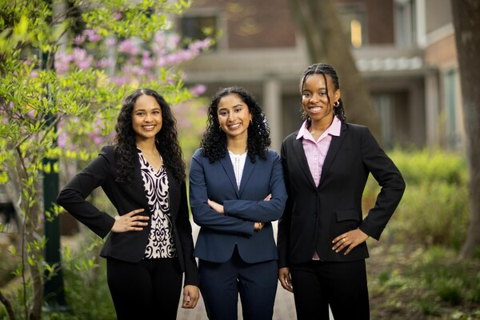

TECHNOLOGY
New 3D-printing enables color-changing,
stress-responsive materials for smart sensing
, displays, and robotics
CAMPUS & COMMUNITY
Empowering high school youth through
immersive art mentorship
SOCIAL SCIENCES
Penn 2025 graduate awarded a Gates
Carmbridge Scholarship

HEALTH & MEDICINE
National Academy of Sciences elects four
from Penn

CAMPUS & COMMUNITY
Nourish to flourish